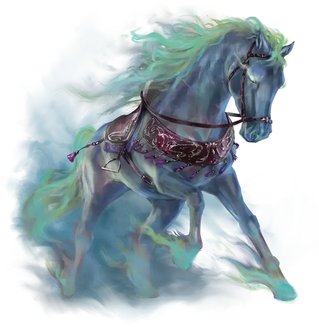

Призрачный скакун
Phantom Steed
3 уровень, Иллюзия (ритуал)

Время сотворения 1 минута
Дистанция 30 футов
Компоненты В, С
Длительность 1 час
Классы Волшебник
Подклассы нежить (колдун), лунное чародейство (чародей)
На полу в свободном пространстве на ваш выбор в пределах дистанции появляется Большое полуреальное похожее на лошадь существо. Вы сами определяете его внешность, но у него есть седло, удила и уздечка. Все снаряжение, созданное этим заклинанием, исчезает в клубах дыма, если его отнести на 10 футов от скакуна.
Пока заклинание активно, вы или выбранное вами существо можете ехать на скакуне верхом. Используется статистика ездовой лошади [riding horse], за исключением того, что скорость существа — 100 футов, и оно может проскакать 10 миль за час или 13 миль в быстром темпе. Когда заклинание оканчивается, скакун медленно исчезает, давая ездоку 1 минуту на спешивание. Заклинание оканчивается, если вы окончите его действием или если скакун получит какой-либо урон.